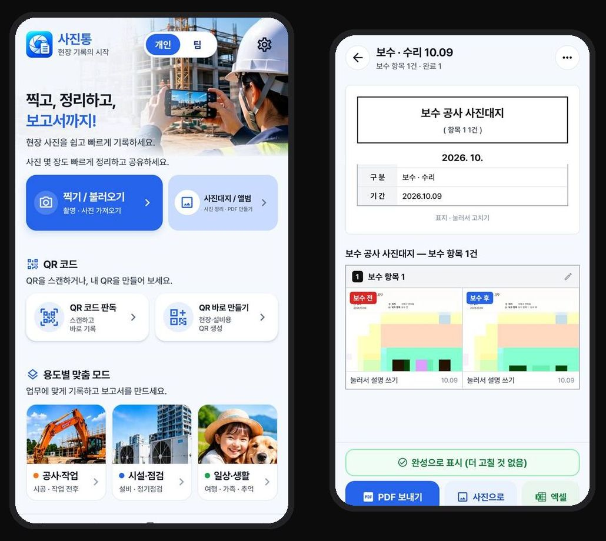
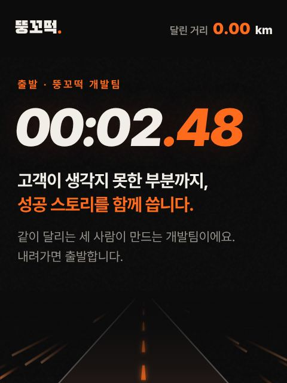

01우리 팀 앱
현장 사진 앱, 사진통
찍고, 정리하고, 보고서까지. 현장에서 찍은 사진을 사진대지로 정리해 PDF·엑셀로 바로 보냅니다. 공사·작업, 시설·점검, 일상·생활 모드가 있어요.
안드로이드 앱안드로이드 앱 받기 →

만든 것 · 지나온 코스
필요한 걸 직접 만들어 써 보고, 고치고, 다시 달립니다.
찍고, 정리하고, 보고서까지. 현장에서 찍은 사진을 사진대지로 정리해 PDF·엑셀로 바로 보냅니다. 공사·작업, 시설·점검, 일상·생활 모드가 있어요.
안드로이드 앱
각자 찍은 사진을 앨범 하나에 모으고, 예쁘게 꾸며서 나눠요. 보드·사진·장소로 찾고, 지도로도 봅니다.
사진 앱같이 달리면서, 달리는 데 필요한 걸 직접 만들었어요. 달린 거리와 주간 목표를 손목에서 바로 봅니다.
손목시계 앱
프로파일러 이진숙 소장님의 연구소 홈페이지예요. 사건분석·진술분석 같은 서비스와 교육을 여러 페이지로 나눠 만들고 있어요.
실제 의뢰 · 제작 중지금 보고 계신 이 홈페이지예요. 내려가면 코스가 그려지고, 결승선에서 카카오톡 상담으로 이어집니다.
우리 팀 홈페이지
시골집을 고치는 가게를 가정해 만든 시연용 홈페이지예요. 휴대폰으로 보고 30초 안에 연락할 수 있게 짰습니다.
시범 운영 · 가상 업체

툇마루집수리·섬돌집고침은 시범 운영으로 만든 가상 업체예요. 화면 속 이름·번호는 시연용, 사진은 참고 이미지입니다.
필요한 것 한 줄이면 충분해요. 어떻게 진행되는지 먼저 보셔도 좋아요.
카카오톡으로 말 걸기 →카카오톡에서 @ddggdd 검색